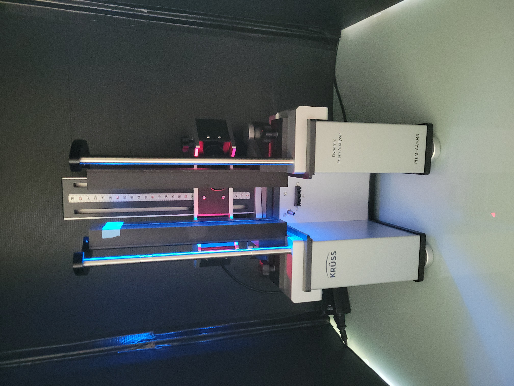
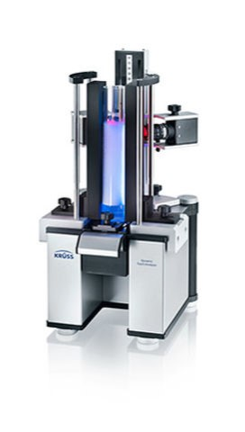
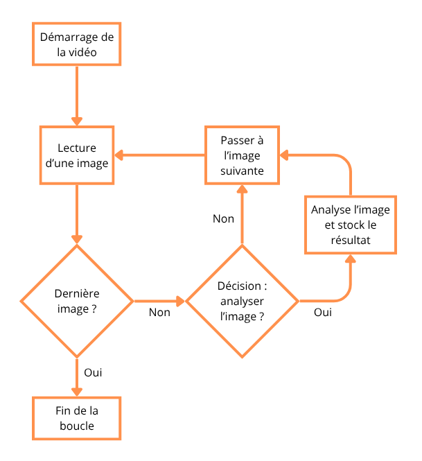
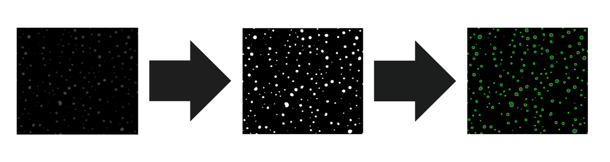

Automatisation de l'analyse de données issues de la recherche agronomique
Maxime GOSSELIN • BUT Informatique
UMET (INRAE) • 22 avril - 20 juin 2025
Plan
- Entreprise
- Contexte de la mission
- Objectif de la mission
- Objectifs & enjeux
- Développement & architecture
- Démonstration
- Conclusion & perspectives
Institut national de recherche pour l'agriculture, l'alimentation et l'environnement
Unité Matériaux et Transformations
Site de Villeneuve d'Ascq
Contexte de la mission
Étude de la mousse de café en fonction du liquide
Financée par une entreprise agroalimentaire
Pourquoi ?
- Améliorer la qualité de leurs cafés
- Augmenter leurs ventes
- Trouver une solution plus écologique
Equipe qui travail sur le projet :
- Julie Beaucé
- Anne-Laure Fameau
- Amandine Descamps
Machine DFA100


Objectif de la mission
- Récupérer la vidéo
- Séparer la vidéo avec FFmpeg
- Analyser chaque image avec une macro FiJi
- Stocker les résultats dans un fichier Excel
- Combiner ces résultats avec les fichiers créer par la machine
- Répéter l'opération pour chaque vidéo et faire une moyenne
Outils & environnement
- Python, venv & Git
- OpenCV pour traitement image
- Pandas pour gestion données
- PyQt5 pour interface
Fonctionnement du programme
- Analyse la première vidéo
- Combine le résultats avec le fichier excel associé à la vidéo
- Recommence pour chaque vidéo
- Fusionne les résultats et fais une moyenne
Analyse Video
Analyse Image
Architecture MVC

Interface utilisateur

Performances
2 vidéos de 20 images traitées en < 2s

Démonstration
Perspectives
- Open-source sur GitHub avec doc en anglais
- Extensible à l’analyse de spores, autres images
- Modularité et maintien facilitée
Bilan personnel
- Compétences : OpenCV, Pandas, PyQt5
- Gestion projet : autonomie, communication
- Intérêt renforcé pour l’enseignement
Questions & discussion
Merci pour votre attention !